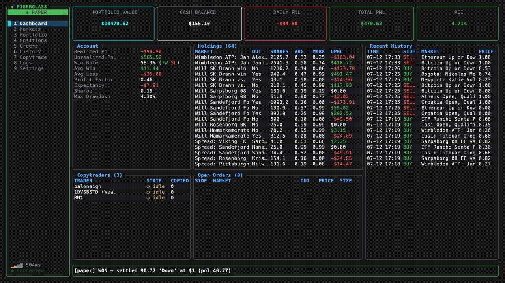

brew tap jesodium/fiberglass https://github.com/jesodium/fiberglass && brew install fiberglasscurl -sSL https://raw.githubusercontent.com/jesodium/fiberglass/main/install.sh | shcurl -sSL https://raw.githubusercontent.com/jesodium/fiberglass/nightly/install.sh | sh..or build it urself source code
9-tab terminal interface with live background refresh.
choose your amount and simulate a real prediction market environment.
mirror trades from any wallets you follow, automatically.
let an ai agent trade through the exact same paths you do.
your keys never leave your machine. no middleman.
20+ scriptable subcommands and a repl for headless boxes.
no. your private key stays in your os keychain and trades go straight from your machine to polymarket. there is no fiberglass server in the middle, so nothing to leak.
start in paper mode: trade with simulated money filled against live quotes, no wallet needed. you can learn the whole app without risking a cent. live mode is opt-in and untested, use your own money at your own risk.
no. it's free and open source (gpl-3.0). if it's useful, donations keep it maintained, but nothing is gated.
you follow any polymarket wallet and fiberglass mirrors their trades into your account automatically, with your own sizing and price-band rules. run it 24/7 on a raspberry pi via the cli.
yes. the built-in mcp server exposes the same paper/live actions over json-rpc, so an agent trades through the exact paths you do.
no. it's an independent open-source client that talks to polymarket's public apis.
fiberglass is free and open source, and runs on donations.